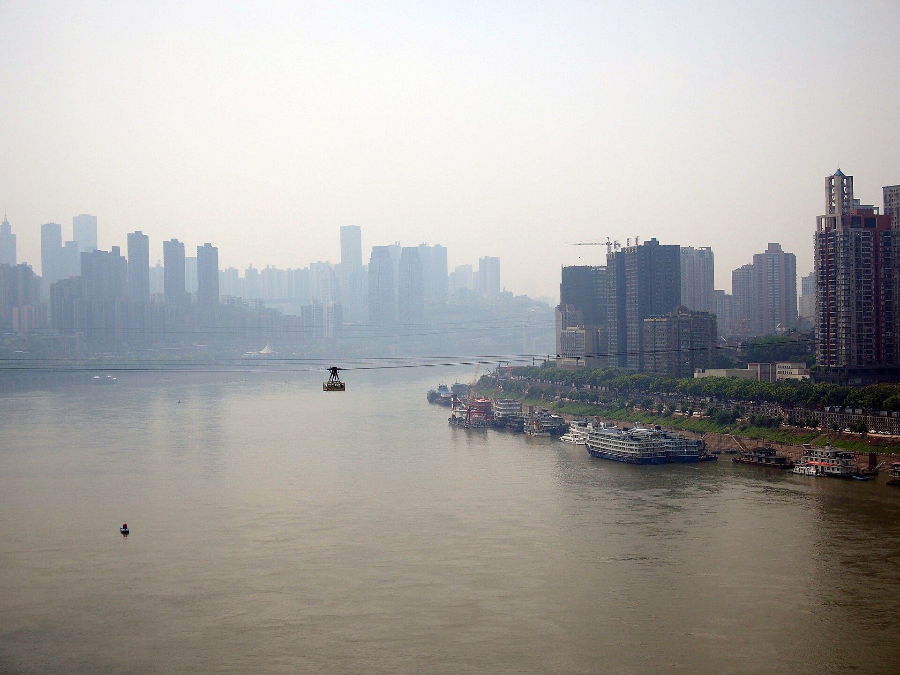
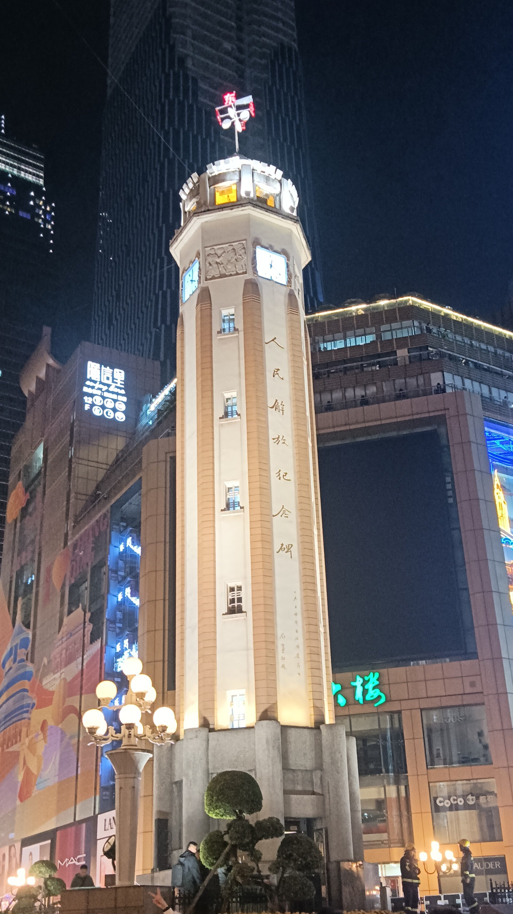
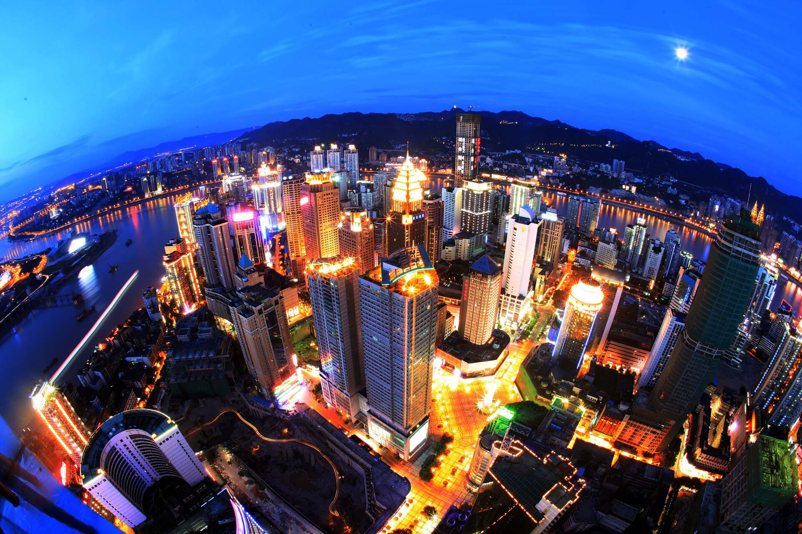
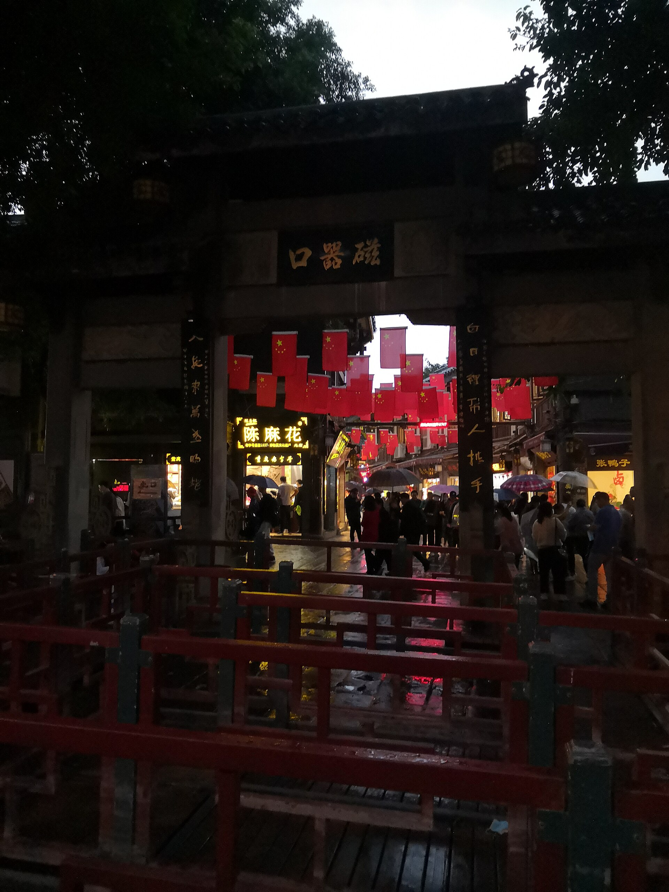
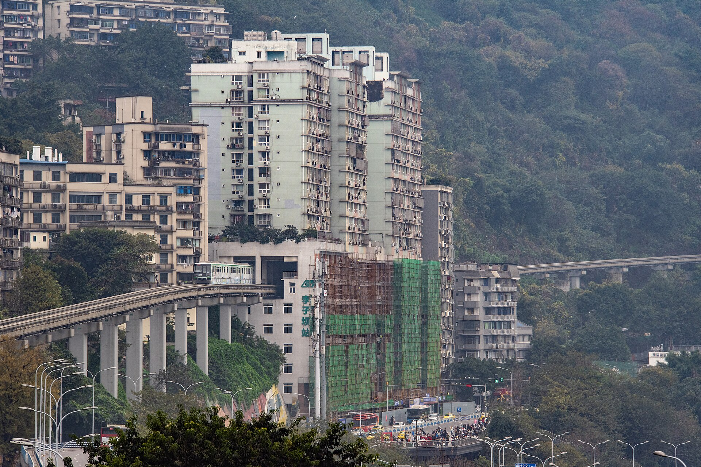
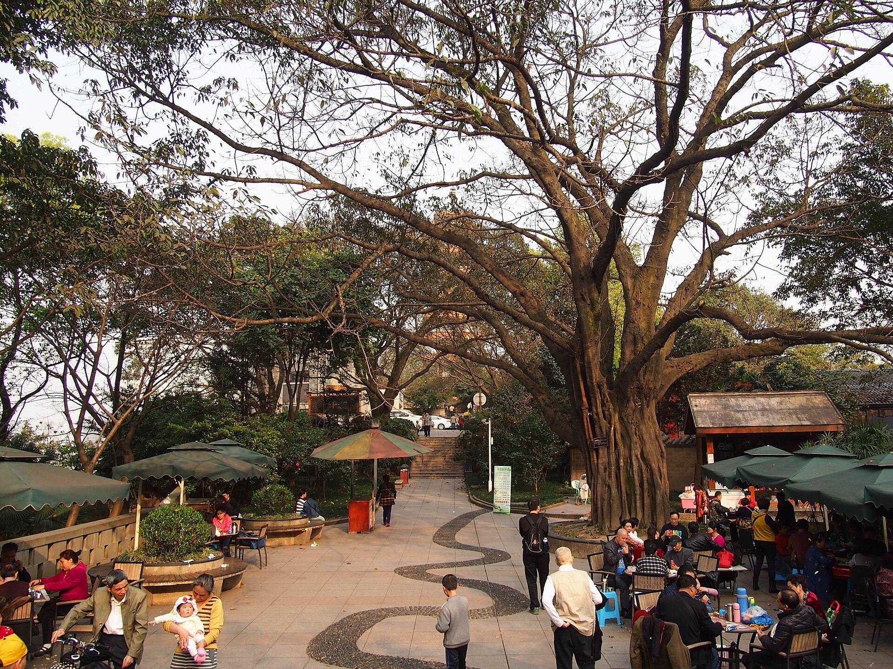
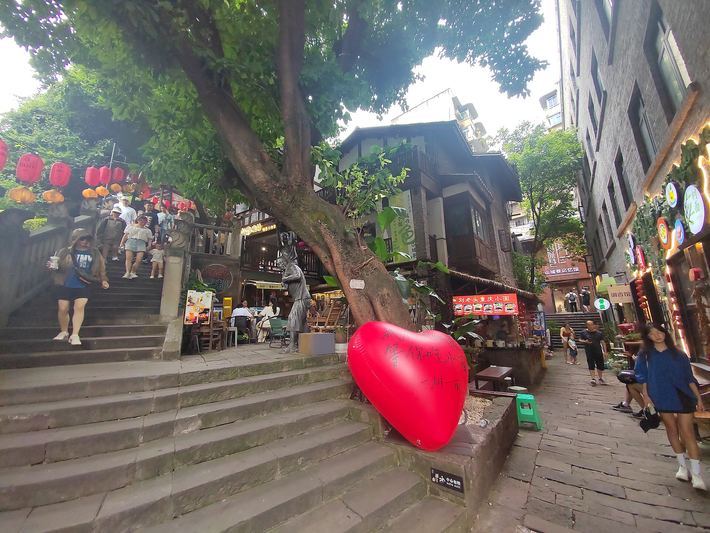
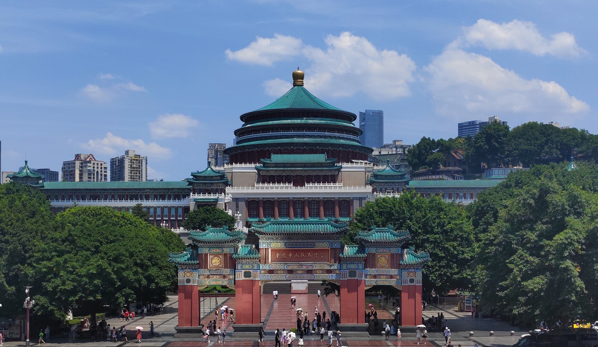
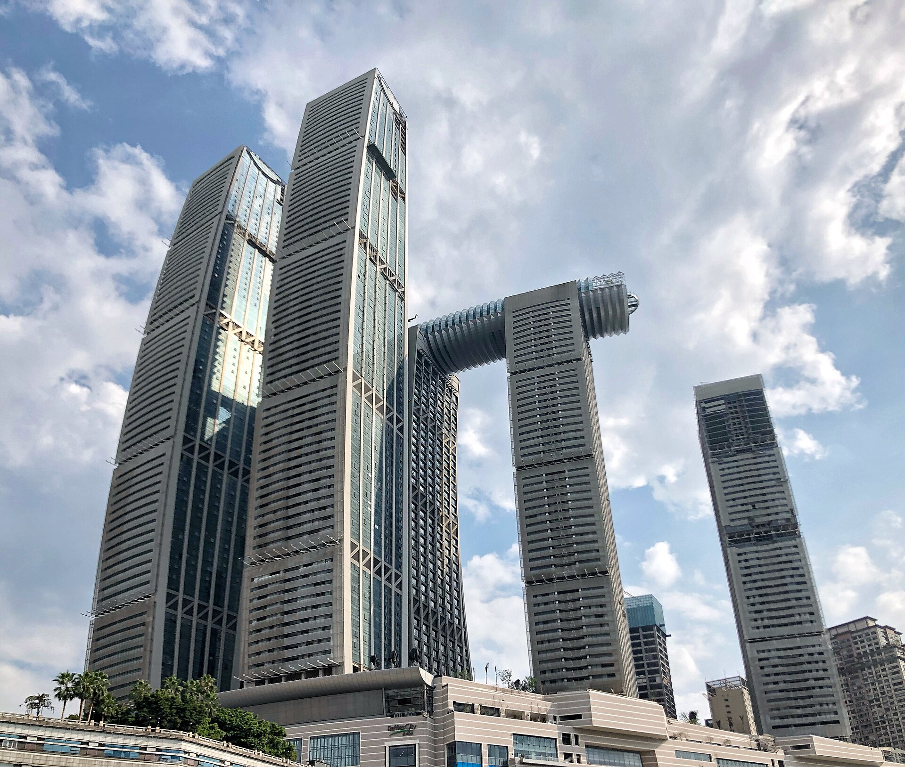
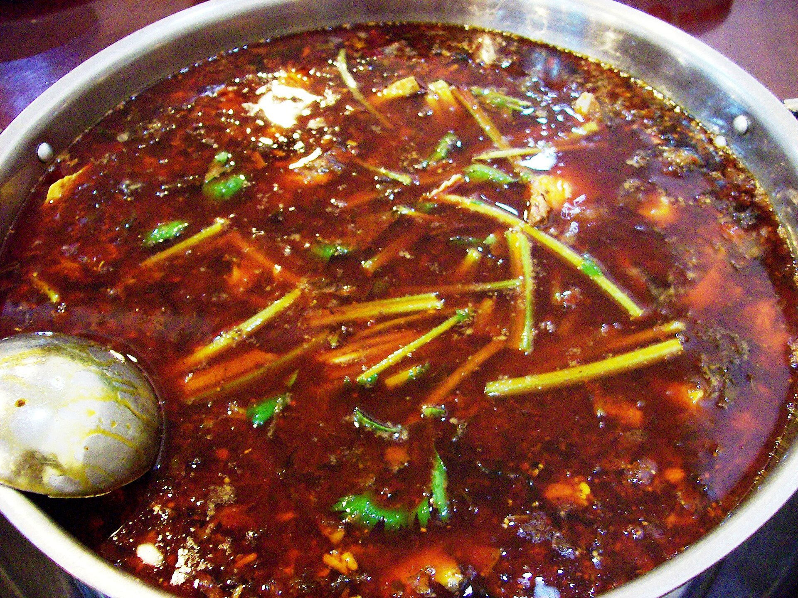

行程速览
三天一条夜景—老城—文脉的线：第一天用江景与灯火开场，第二天钻老街坐轻轨，第三天在礼堂与博物馆里读懂重庆。导航在这里经常失灵，跟着感觉走就对了。
Day 1 · 从江上索道到千与千寻
关键词：解放碑、过江索道、南山夜景、洪崖洞。第一天从白天亮到深夜，把重庆最著名的几盏灯全部点亮。
怎么去重庆（上海出发）
上海浦东 / 虹桥 → 重庆江北机场约 3 小时，票价随季节波动（约 ¥500–1300），提前 2–3 周出票。机场 3 号线直达市中心，江北机场离渝中半岛仅 30 分钟车程，是几座内陆城市里"落地最顺"的一个。
上海虹桥 → 重庆北 / 重庆西，最快约 7–10 小时，二等座约 800 元起（以 12306 为准）。赶时间不建议，但若想一路沿江看山，卧铺夜车还能省一晚房费。
轻轨 1/2/3/6 号线本身即景点（2 号线穿楼、3 号线跨江）；打车便宜但导航常失灵，问路比问地图快——"魔幻 8D"名不虚传。

从碑到江，再到一整片灯火



Day 2 · 老街、轻轨与山城步道
关键词：磁器口的麻花、李子坝的穿楼列车、山城巷的石梯。第二天全部是"重庆名场面"，走路配轻轨刚好。
千年磁器口与穿楼的轻轨




Day 3 · 礼堂、博物馆与两江交汇
关键词：人民大礼堂、三峡博物馆、朝天门。最后一天读懂"重庆从哪里来"，午后从容返程。
在两江交汇处说再见


住在哪里
重庆选住宿先想清楚一件事：要不要推开窗就是夜景。渝中半岛最方便，南滨路最出片。价格为常规参考区间，以预订平台实时价为准。
解放碑商圈酒店
住在城市原点：楼下就是步行街与好吃街，洪崖洞步行可达，两条轻轨线交汇——三天行程从这里出发都顺。
南滨路江景酒店
对岸就是渝中半岛的整片灯火，躺在床上看洪崖洞亮灯——重庆夜景"从对岸看才完整"，住这边等于承包观景台。
观音桥商圈酒店
本地人的夜生活主场：商圈热闹、物价友好，3 号线直达机场与火车站，适合把预算留给火锅的务实派。
古镇民宿
住在千年古镇里，清晨的青石板路属于住客；1 号线进城半小时，适合行程后半段想"慢半拍"的安排。
山城味道
重庆的味道只有一个字：辣。但辣也有层次——牛油火锅是重锤，小面是日常，冰粉凉虾是台阶。照着吃不会错。

牛油厚重、花椒麻香，毛肚鸭肠是永恒主角——在重庆吃火锅，微辣是底线也是起点（真实照片 · 重庆火锅）。
重庆火锅九宫格
牛油锅底不用点鸳鸯是本地尊严，但外地胃点鸳鸯完全OK；毛肚"七上八下"、鸭肠涮三秒。
重庆小面二两提黄
麻辣鲜香全在佐料里：豌豆杂酱、牛肉、肥肠浇头任选，"提黄"（面偏硬）是老饕暗号。
酸辣粉手工红薯粉
酸辣开胃、粉条筋道，磁器口与八一好吃街都有名店，站着嗦完一碗才算来过。
辣子鸡歌乐山
辣椒堆里"寻宝"的快感：鸡丁炸得酥脆，越翻越香——歌乐山是发源地，市区江湖菜馆都有。
毛血旺磁器口
鸭血、毛肚、黄喉、午餐肉烩成一盆红油江湖——重庆下水菜的天花板。
泉水鸡南山一条街
南山脚下的招牌：泉水焖煮、一鸡三吃，看夜景前正好在山腰吃一顿。
豆花饭苍蝇馆子
嫩豆花蘸油碟配甑子饭，十几块钱吃出老重庆的日常——午饭性价比之王。
抄手红油 · 清汤
重庆版馄饨，红油抄手香辣过瘾，清汤抄手温柔解围——两样都点不冲突。
烤苕皮夜市顶流
烤到起泡的红薯粉皮刷辣酱卷酸萝卜，近年最火的街头小吃，夜市人手一串。
冰粉 · 凉虾解辣台阶
红糖冰粉、山楂冰粉、凉虾配醪糟——重庆辣度的安全出口。
陈麻花磁器口伴手礼
现烤的蜂蜜麻花酥到掉渣，原味、麻辣、巧克力三选，排队最长的那家就对。
火锅底料伴手礼
超市买两块正规品牌的牛油底料，回家就能复刻重庆之夜——比特产店实惠。
解放碑旁的小吃集散地，酸辣粉与汤圆老铺集中，第一天先开胃。
陈麻花、古镇鸡杂与酸辣粉的原产地，第二天顺路解决。
本地夜宵大本营：火锅、烧烤与夜市全开，适合第二晚。
看夜景前的晚餐据点，泉水鸡配山风，吃完正好上山。
实用贴士
日期待定的山城之旅，功课重点在"防迷路、防暴汗、防排队"：
防迷路指南
重庆导航经常"失灵"：地图 100 米可能是 11 层楼。定位认"轻轨站名"而非门牌号，问本地人比问手机快；1 楼不在 1 楼是常态，接受它。
季节与天气
夏季是"火炉"模式（可达 40°C），务必防暑；冬季多雾，夜景可见度看运气；春秋最舒服。夜景行程尽量排在晴朗天，雨后有时反而出"平流雾"大片。
预约与排队
三峡博物馆免费需预约且周一闭馆；长江索道、两江夜游旺季排队久，线上购票选错峰时段；洪崖洞看灯免费，22:30 左右熄灯，别去太晚。
交通要点
轻轨是最稳的选择（2 号线、3 号线本身就是景点）；打车便宜但上下坡单行道多；江北机场到渝中约 30–40 分钟，比多数大城市友好。
吃辣管理
重庆的"微辣"≈其他城市的"特辣"；点单直接说"不要辣"也完全没问题；冰粉、唯怡豆奶随时备着，肠胃敏感当天别空腹吃火锅。
体力与装备
山城 = 天然爬楼机：运动鞋是刚需，护膝党自备；夏天随身带水，手机电量注意（导航耗电快）；行李箱尽量选轻的——上坡你会感谢自己。